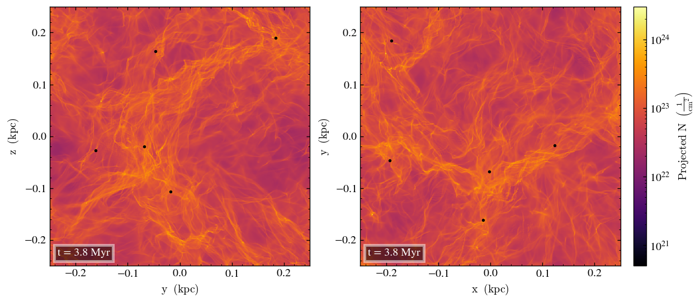

Home
About Me
Research
Publications
First Author Papers

Necessary Conditions for the formation of filaments and star clusters in the cold neutral medium
Rachel Pillsworth, Ralph E. Pudritz
ADS link: